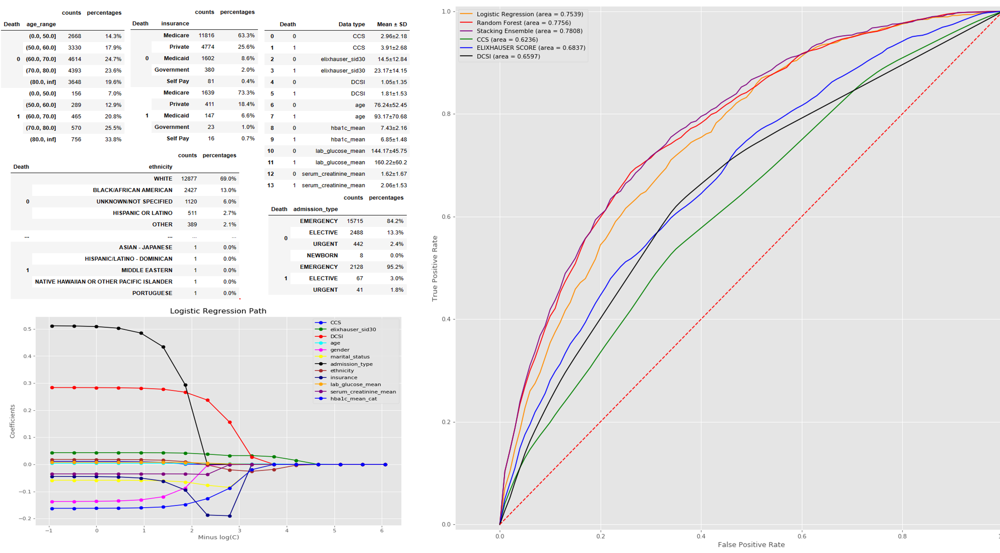

Hospital operation can be improved by predicting the influence of diabetes on the risk of ICU mortality.
MIMIC-III is installed in a local Postgres database.
Data are extracted and processed to DCSI, Elixhauser, and CCS index by aggregating in tabular formats in terms of assigning scores based on ICD-9-CM diagnosis code.
The objective of this project is to predict and examine the influence of diabetes on outcome in ICU patients using predictive modeling approches including random forest, logistic regression, and their optimization.
Estimation on which coefficients have the largest impact on the models is also conducted.
The paper https://www.ncbi.nlm.nih.gov/pmc/articles/PMC5961793/ is followed as a guildline and the scope is extended by including patients that don't have HbA1c data.
Also, data including patients with additional ICD9-code : 240.x-249.x, 357.2, 362.0, 366.41 and 648.4 which are also diabetic related code.
The additional ICD9-codes are acquired from https://www.ncbi.nlm.nih.gov/pubmed/28416120.
In the project, the aims are:
1. find out how standard comordity scores perform on ICU diabetic patients and whether it can be used to improve the model by using the combined method or by providing additional information (HbA1c, glucise and serum creatinine)
2. find out how the same model performs on different dataset
1) patients with HbA1c data
2) patients without the data
3. find out the best way to create a model that can handle both cases of patients and two approaches are tested in this project
1) building separate model on each dataset
2) changing HbA1c to catergorical data and add NaN as another category
4. in Logistic Regression model, find out which factor contributes to the result most.
